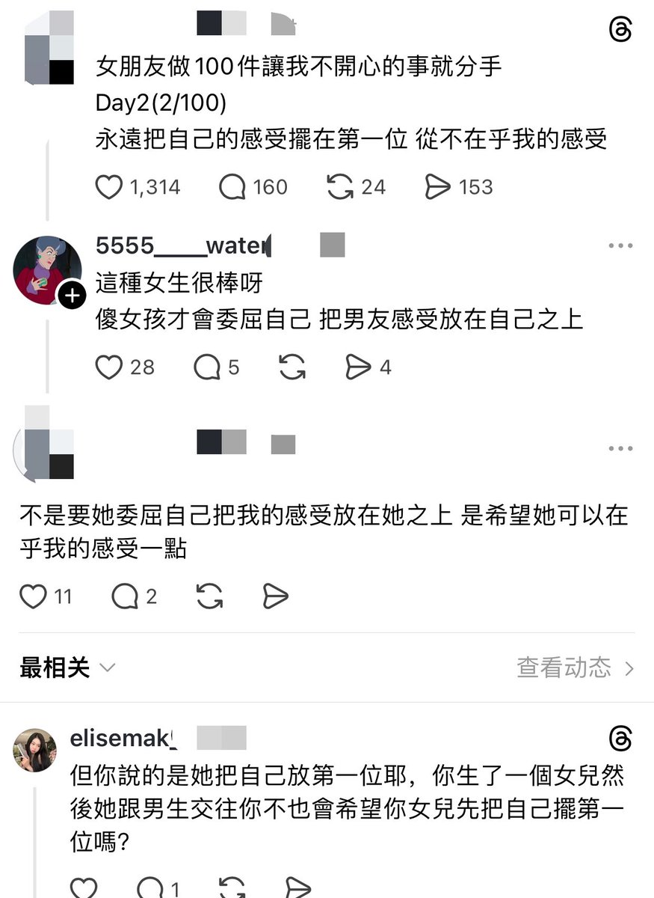

f hv
@fhv932189957574
sb?，我草你妈逼的妓女，妈的一群sb，那为什么他不把自己感受放在女友之上，双方不应该互相理解吗，妈的一群吸血鬼要求自己的感受永远排在第一位，相爱这个词在它们身上就纯笑话，没有看到所谓的＂纯爱＂的未来，纯爱太小众，没有要求时时刻刻都在乎，从不在乎你妈是人啊，特么两个人谈恋爱不应该是互相在乎吗，不应该在意对方的感受吗不是双向的吗，人家搁那说自己的择偶要求集美凑什么热闹，女儿和女朋友能是一种关系吗，难道是自己的女儿就可以完全不照顾爱人的感觉吗，第一位和照顾他人是不冲突的啊啊啊啊啊啊啊啊啊啊啊啊
